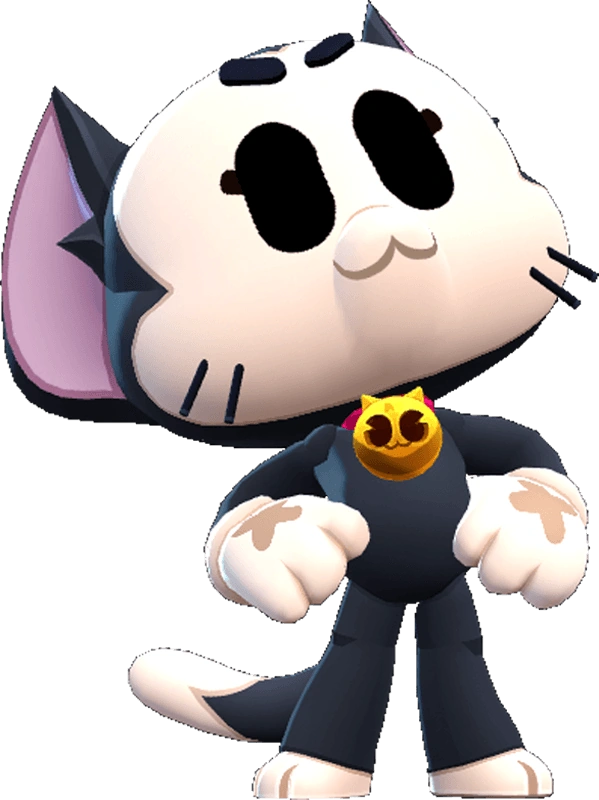

¿Quién es Kit?
Cansado de firmar autógrafos en los Estudios Starr de Animación, Kit sueña con volver a ser alguien en la industria. Alguien reconocido por su talento más que por su apariencia
Kit es un brawler Legendario que tiene un alcance corto, poca salud y daño, pero una inmensa utilidad con su súper en su modo normal. En su forma alternativa, tiene un largo alcance y un daño muy alto. La forma normal de Kit ataca con una garra rápida de corto alcance con un tiempo de ataque y una velocidad de recarga extremadamente rápidos. Su rasgo permite que su súper se cargue pasivamente con el tiempo. Con su súper, Kit salta sobre un Brawler enemigo, lo aturde y le causa daño con el tiempo. Si Kit salta sobre un Brawler aliado, lo monta momentáneamente, transformándose en su forma alternativa y curándolo con el tiempo en el proceso. La forma alternativa de Kit ataca lanzando su ovillo de lana sobre obstáculos que explotan y causan un gran daño en un radio medio, al tiempo que lo hacen invulnerable. Con su súper en su forma alternativa, Kit se baja del Brawler aliado y se transforma nuevamente en su forma normal.
|  |
NIVEL DE FUERZA 11 |
Sus gadgets
CAJA DE CARTÓN: Se esconde en una caja de cartón y se vuelve invisible durante 3 segundos. Carga el súper 100% veces más rápido mientras se mantiene inmóvil. |
HAMBURGUESA CON QUESO: Se cura a sí mismo y al brawler aliado al que esté subido 30% puntos de vida. |
Sus habilidades estelares
 |
SED DE PODER: Kit consigue un 150% de fuerza con cada cubo de fuerza. |
 |
APEGO EXCESIVO: Kit se sube a los brawlers aliados durante 5 segundos más. |
 Braian Arancibia
Braian Arancibia Aya El Baarar
Aya El Baarar